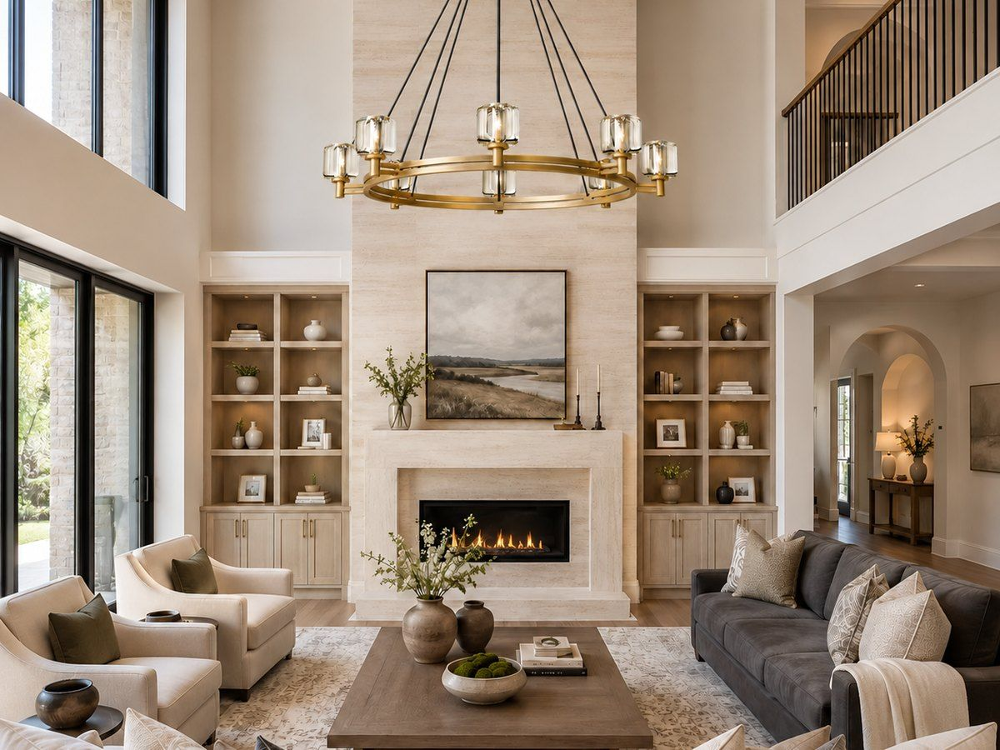
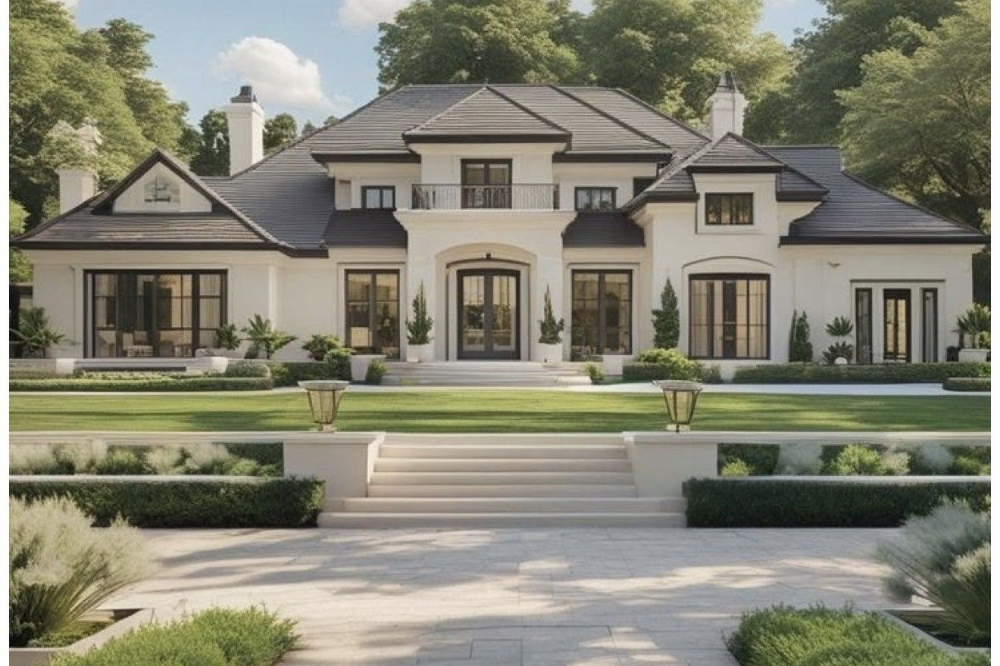
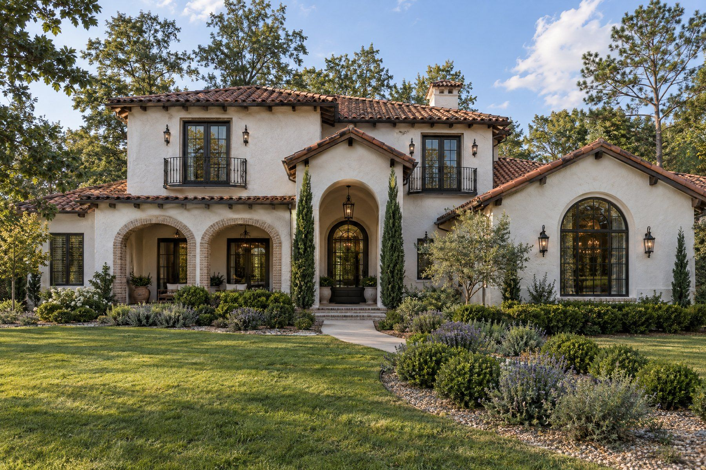
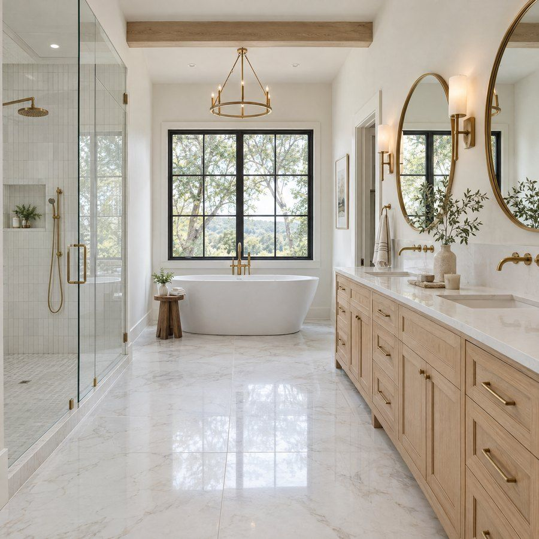

An exterior worth coming home to.
The arrival sets the tone. We consider scale, proportion, materials, and the relationship to the site to create an architectural expression that feels distinctive and welcoming.
Our work
There is beauty in the grand gestures, and in the thoughtful little decisions that make a place feel entirely your own. Explore the projects and design ideas taking shape at Keystone.
Opening perspective
The most memorable spaces are never just a collection of beautiful finishes. They reflect the people who use them. How they welcome guests. Where the morning light belongs. How one room flows into the next. We pay attention to the bigger picture and the everyday details, so beauty and functionality feel inseparable.
A closer look
The arrival sets the tone. We consider scale, proportion, materials, and the relationship to the site to create an architectural expression that feels distinctive and welcoming.

Inside, the details tell a more personal story: the way a room opens to daylight, where everyone naturally gathers, and how materials and finishes come together with purpose.
Completed projects
A Keystone home brought from vision to reality. Explore the architecture, interior spaces, and finishing details that make this completed residence its own.
Design inspiration
The images in this section are styling references and concept visualizations, not completed Keystone projects. They show the character, materials, and proportions we bring to the work.




Under construction
Some of our favorite project moments happen before the final reveal. Explore current work and see how plans, materials, and craft come together, one milestone at a time.

Commercial projects
Healthcare spaces ask more of good design. They should feel welcoming to patients, intuitive for staff, and considered in the way people move through them. Shoals Medical Park brings that people-first thinking to a planned medical environment, with an exterior that makes a strong impression and a layout shaped around daily function.
Approximately 17,700 square feet of planned physician, laboratory, diagnostic imaging, physical therapy, and pharmacy space.
What we create
Distinctive, thoughtful homes shaped around the way you want to live.
The right lot for the home you imagine: one of ours in select neighborhoods, or a search we lead on your behalf.
Thoughtfully considered homes and neighborhoods, balancing individual character with a larger sense of place.
Purposeful, welcoming environments designed around the people and work they support.
Your project
Tell us about the home or building you have in mind and we will show you how it could come to life.